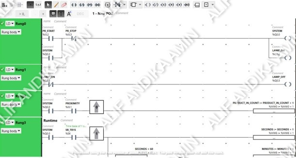
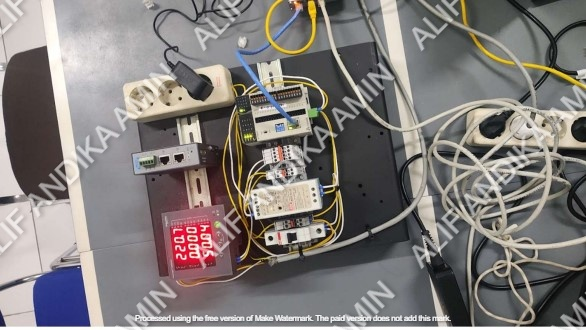
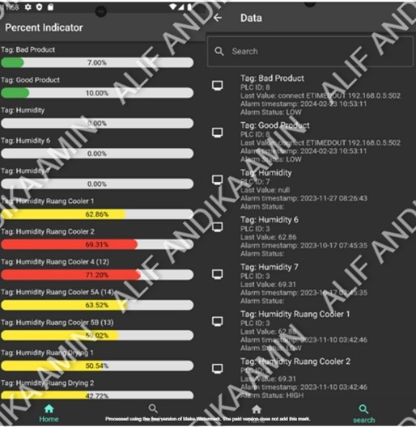

Tujuan project ini adalah:
1. Mengintegrasikan PLC dengan Android dengan menggunakan API sebagai komunikasi.
2. Membuat desain UI yang simple dan informatif.
3. Menggunakan proximity dan photoelectric sebagai alat untuk menghitung dan memilah kualitas produk.
Berikut adalah cara kerja sistem ini:
1. Pengumpulan Data PLC: PLC mengontrol perangkat dan proses otomatisasi, seperti mesin atau sensor. Data ini meliputi status mesin, parameter sensor, atau sinyal input/output (I/O) yang dikendalikan oleh PLC.
2. Protokol Komunikasi: Untuk menghubungkan PLC dengan perangkat Android, digunakan protokol komunikasi seperti Modbus TCP, OPC UA, atau Ethernet/IP. PLC mengirimkan data melalui jaringan yang dapat diterima oleh aplikasi di perangkat Android.
3. Pengolahan Data: Data yang diterima oleh aplikasi Android diproses untuk ditampilkan dalam format yang mudah dipahami. Misalnya, grafik, status mesin, atau alarm yang memberi tahu pengguna tentang kondisi sistem.
4. Interaksi Pengguna: Pengguna dapat memantau dan mengontrol sistem PLC dari jarak jauh melalui aplikasi Android. Aplikasi ini memungkinkan pengguna untuk mengubah pengaturan, memulai/menjeda proses, atau menerima notifikasi jika terjadi masalah pada sistem otomatisasi.
5. Pengendalian Real-Time: Pengguna dapat melakukan kontrol secara real-time, seperti mengubah parameter operasi atau memberikan perintah untuk mengubah status mesin atau perangkat lain yang terhubung ke PLC.
6. Antarmuka Pengguna (UI/UX): Aplikasi Android dirancang dengan antarmuka yang responsif, memungkinkan pengguna untuk berinteraksi dengan sistem PLC dengan cara yang sederhana dan intuitif, baik dalam bentuk dashboard, grafik, atau tabel.
Sistem integrasi data antara PLC dan Android berfungsi untuk memantau dan mengontrol proses otomatisasi industri secara real-time melalui perangkat mobile. Sistem ini memungkinkan pengguna untuk mengakses data PLC, memberikan perintah kendali, serta menerima notifikasi dari mana saja.
Dengan sistem ini, pengguna dapat melihat status mesin, mengatur parameter operasi, dan memantau performa sistem langsung dari aplikasi Android. Implementasi sistem berhasil meningkatkan keterhubungan antar perangkat serta memudahkan manajemen proses otomatisasi industri secara mobile dan praktis.